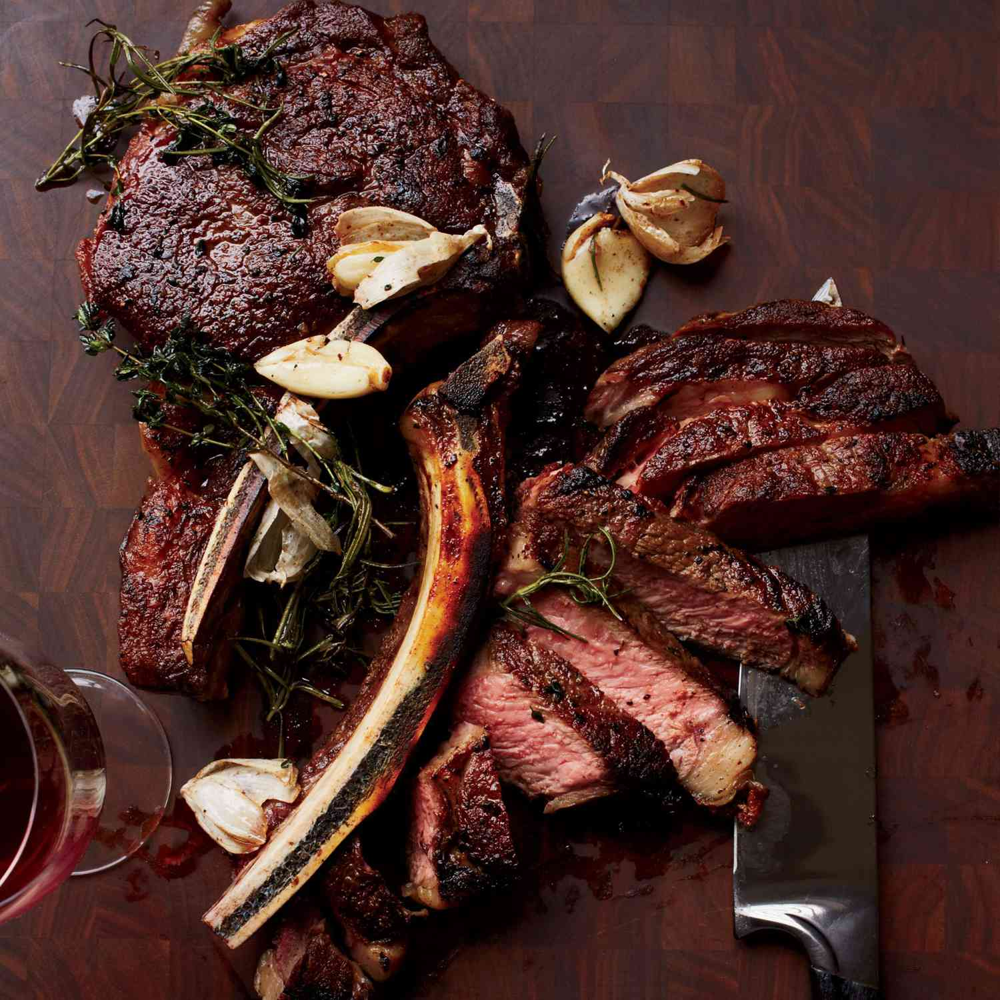

Ribeye Steak Recipe

Description
Bone-in rib eye steaks are simply basted with butter, garlic, rosemary,
and thyme while they cook in a cast-iron skillet, infusing them with
full-bodied flavor.
Ingredients
- 2 (1 1/4lb) bone-in rib eye steaks
- Kosher salt
- Freshly ground black pepper
- 2 tablespoons canola oil
- 4 tablespoons unsalted butter
- 4 thyme sprigs
- 3 garlic cloves
- 1 rosemary sprig